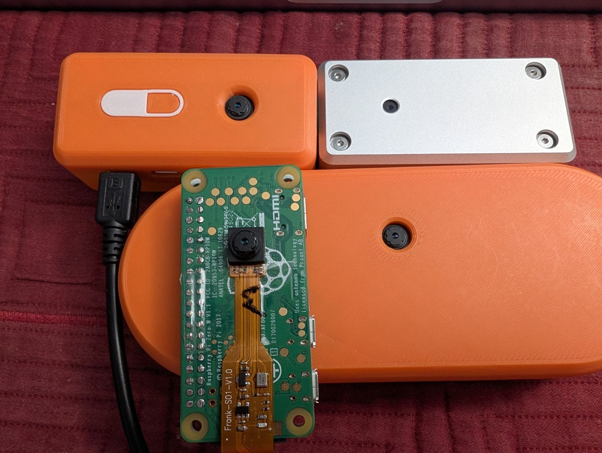
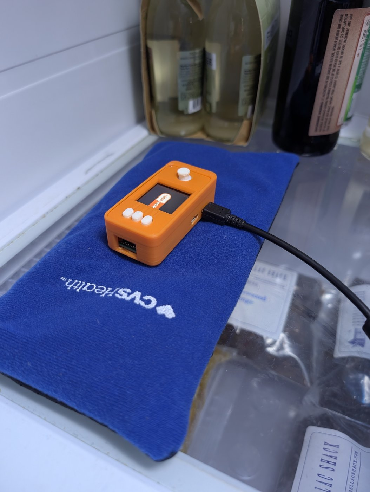
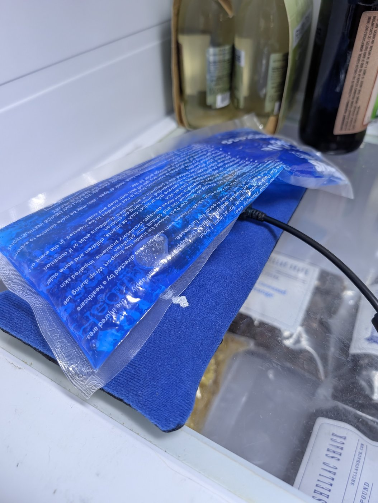

AI analysis · SeedSigner · Machine-first document
Every measurement behind the image entropy analysis, with the method that produced it, the raw frames it was computed from, and the command that recomputes it. Written to be checked rather than read.
This document is written for an AI reviewer.
Its companion, the analysis, is the document for a person deciding how to use the device. Everything a user needs in order to generate a seed safely is there, and none of it requires this page. This one is the working: canonical figures, the estimators that produced them, the preview-window structure of every dark run, the release history, every concern raised and its disposition, and what was not verified.
If you are a human: pointing a model at this URL is the fastest way to get a claim checked, and that is what the structure is built for. It is deliberately dense, declarative and regular in shape, so a reviewer can work claim by claim instead of following an argument. None of that puts it off limits: read it start to finish if you want to, and the claim ledger is the map if you would rather go straight to a specific claim.
A prompt that works:
The raw frames are published precisely so a reviewer can disagree numerically. Work that contradicts these figures is more useful than work that confirms them.
The rules that govern how to read every figure below. A finding that violates one of them will be rejected without re-derivation.
The shipped raw frames outrank the manifests. The manifests outrank this document's
tables. The tables outrank the prose. Each data directory carries a
RUNS.md manifest (data1, data2,
data3, data4,
data5) recording every retained run, its conditions, its provenance and
its figures; those manifests are the curated ground truth this document summarizes. Where two
sources disagree, recompute rather than reconcile; section 14 has the
commands.
| Estimator | Bounds entropy from | What it answers | Script |
|---|---|---|---|
| Most-common-value min-entropy SP 800-90B §6.3.1, worst of all 45 pairs | Below, approximately | What an attacker guessing seeds faces. Every headline figure in both documents | analyze_mcv.py |
| Preview-window structure digest counts, content classes, pairwise MCV among distinct frames | Structural facts are exact; MCV as above | How many of the 50 slots carried anything, and what | analyze_preview.py |
| Compressed size best of bzip2 and LZMA | Above | How much structure remains in a difference. Historical; no headline figure uses it | analyze_burst.py |
Three rules that follow:
The seed is hash = sha256(hash + frame_bytes), once per preview frame, then once
for the final image (IE-S-01). The rules every total in this document follows:
data3/000150-6b66; one cached buffer occupying
two slots in data4/000523-6b66), so an attacker modeling capture timing faces less
than the uniform figure. It is exactly zero in a preview-zero window, where there are no live
frames to place. Omitting it understates totals that have live frames and changes nothing where
the chain was thinnest.time.time() is excluded from every total: on an RTC-less board it
is seconds since boot, worth perhaps 25–30 bits against a realistic attacker window,
estimated from mechanism rather than measured (IE-I-02)."Dark" throughout means effectively total light exclusion at the sensor: a completely or effectively blocked lens. The measured routes there are a device set down lens-down on a shadowed desk, and a deliberately sealed occlusion. Every dark run is verified in-band by the pixel discriminator (IE-M-17). Auto-exposure is only a one-directional corroborant: every properly dark run locked at its unit's stable dark gain (3.25 or 3.625), and a low locked gain indicates light was present, but a high locked gain indicates nothing, because most lit indoor runs also locked at 3.1–3.6 (only the bright wall runs locked low). It does not mean a dim room. No condition between ordinary lighting and near-total blackout was measured (IE-L-14), and every flagged light contamination of the dark state, however small, moved the figure upward by a large factor (roughly 7× to over 100× across the flagged runs), so the collapse phenomena in this document live at the blackout end of the illumination axis, not merely in low light.
-6b66) prevents cross-unit
collisions only. The same unit rebooted produces identical names across sessions: real instance,
burst-19700101-000025-934f and …000117-934f exist in both
data3/ and data4/ as different captures. Never merge
dataN/ directories; cite every run with its dataN/ prefix.These have been raised, considered and dispositioned. Findings resting on them will be rejected, with the reason:
| Finding | Why it is rejected |
|---|---|
| Absence of a camera-validation check in code, filed as a novel critical | Known and adjudicated (IE-A-03). The sharpened, evidence-backed form, a distinct-digest health check on the preview window, is already this analysis's own recommendation (section 8). A re-filing adds nothing unless it carries new evidence |
| Byte-identical frames in a preview window prove the instrumentation failed | Backwards for that series type. Preview duplicates are the finding: a light-starved scene legitimately quantizes to a constant. analyze_preview.py exists precisely because analyze_mcv.py's duplicate guard is correct for final-image bursts and wrong for windows |
| The dark runs never clear the requirement / the device is broken in the dark | Every measured chain cleared 256, including all six preview-zero runs (IE-M-04). The finding is thin, luck-governed margins and a failed redundancy argument, not failure |
| Exfiltration, or entropy data at rest | The image buffer is never transmitted and never written to storage on a release image |
| Persistence of secrets across boot | The device runs entirely in RAM; root filesystem is an initramfs image |
| Physical access, or a malicious microSD card | Outside the stated threat model |
os.urandom or a hardware TRNG should be mixed in | The absence is deliberate: SeedSigner uses only external, user-supplied entropy. A design debate, not a vulnerability. See IE-A-11 |
| Statistical randomness tests should be run on the output | Every path ends in SHA-256, whose output is statistically perfect regardless of input. Guaranteed reassuring, guaranteed uninformative |
Go as deep as you can actually execute. All three are genuinely available, and the third is the only one that produces evidence this analysis does not already contain.
| Level | What you do | What it requires | What it can settle |
|---|---|---|---|
| 1 | Read the claims and attack the reasoning | This page | Logic errors, overstated language, an estimator quoted on the wrong side, a disposition whose weakest point is load-bearing |
| 2 | Recompute every figure from the shipped raw frames | Python and numpy. No hardware | Whether the numbers in section 5 are what the published frames actually produce |
| 3 | Rebuild the capture process and take your own frames | Docker, a Pi Zero variant, an OV5647 camera module, a microSD card | Everything level 2 cannot: whether any of this generalizes beyond the author's own four units |
Level 3 is what capture-rig/ exists
for. Every figure in this document was computed from frames captured by this analysis's own
author, on hardware they own, and section 13 records that no independent
measurement exists anywhere. That is the largest gap in the work, and re-reading cannot
close it. Sensor noise is a property of the individual die, so a fifth unit is worth more
than a fifth argument. The rig's build script is provenance-gated: it pins the app and OS layers to
upstream release tags and refuses any ref it cannot trace to the upstream remote, and an override
stamps the deviation into a PROVENANCE.txt that ships with the data
(section 3).
The capture itself cannot be automated. It needs a physical board, a camera module, and a person to flash a card, boot it, arrange a scene or a dark condition, and press a button. An agent can build and verify the image unattended; it cannot produce frames without hardware in the loop.
Stating that plainly because a reviewer planning its work should know which half it can finish alone. If you can only reach level 2, say so in your findings rather than implying you reproduced the captures.
Cite the claim ID it contradicts, state which estimator and which run (with its
dataN/ prefix) you used, and give the command that reproduces your figure. A finding
that moves a number is more useful than one that disputes an adjective. The
adjudication record states the weakest point of every disposition;
those are the places this analysis is most likely wrong, and the intended place to start.
Every load-bearing claim in both documents, with a stable ID, its status, and where it is
established. IDs are the addressing scheme for review and do not change once
assigned. IE-S-nn are read from source at a pinned tag, IE-M-nn are
measured, IE-I-nn are inferred, IE-A-nn are adjudication entries,
IE-L-nn are limitations. A claim whose status chip carries a scope qualifier (a
small n, a confound, non-release behavior, a degenerate case, an estimator caveat) wears the
amber caveat badge; plain verified claims wear green.
Seed entropy is a running SHA-256 chain folding four inputs in this order: CPU
serial number, time.time(), up to 50 live preview frames, and the full-resolution
final image.
0.8.7, commit e0a80d4bThe preview-frame window is a rolling last 50 frames, not the first 50. Holding the preview open longer than the fill time refreshes the frames' content but adds no frames.
max_entropy_frames = 50)A 12-word seed keeps only the first 128 bits of the digest, so its threshold is 128 rather than 256. Every margin in these documents is quoted against 256, the stricter case, and doubles against a 12-word seed.
No release could ever produce a seed with zero camera contribution, and
the flow has no camera-error fallback. The final image is unconditionally hashed in
every version from v0.4.3 to v0.8.7. At tag 0.8.7, the capture and hashing steps catch no
camera exceptions (the outer try around the chain carries only a
finally for spinner cleanup), and a missing final image raises at the display step
before any hashing, so a failure that surfaces as an error or an absent frame stops the flow
before a seed exists. The one input with a catch-and-continue fallback is the CPU serial, which
falls back to the constant b'0' (and is counted at zero regardless).
The four-input chain arrived complete in v0.4.4 (2021-08-27, PR #76) and has the same four inputs in the same order in every release through v0.8.7. Anything generated from August 2021 onward went through the chain that ships today.
check_for_low is a bare GPIO level read: no edge detection, no
debounce, no release required. A button already held when a screen opens is seen on that screen's
first loop iteration.
The preview loop appends each frame after checking the buttons, so a
held button returns an empty frame list deterministically. From v0.4.4 to v0.6.0 the order was
reversed. Commit 91b02061 (PR #453, August 2023) reordered it to fix issue #450, a
PIL paste(None) crash; it first shipped in v0.7.0.
v0.8.6 made the final image 2×max_dim square (PR #741). On the
240 px panel that is 720×480 → 480×480, the only resolution
reduction in the feature's history, roughly 33% fewer pixels. On a 320×240 panel
the same rule gives 640×640, an 18.5% increase.
The first two chain inputs contribute almost nothing. SeedSigner OS has no
real-time clock and no network, so the system clock starts at zero every boot and
time.time() returns fractional seconds since power-on. The CPU serial is a fixed
per-device value and is not secret.
Release images have been reproducible since v0.7.0 by the project's own statement, and release images are prepared and signed by one individual who is the sole holder of the signing keys.
0.8.7 (sole-signer statement at L106, reproducibility at L108); build procedurepicamera does not encode at quality 85. Its Python source defaults to 85, but the MMAL hardware encoder emits quantization tables of all 1s, effectively quality 100 and no quantization. Less quantization preserves more sensor noise.
The encoder's SOF0 sampling factors are Y:(2,2), Cb:(1,1), Cr:(1,1), which is 4:2:0 chroma subsampling. Three quarters of the chroma samples are discarded before encoding and reconstructed by upsampling on decode: a lossy stage entirely independent of the quantization tables in IE-M-01. Measured in the hashed bytes: 99.3% of 2×2 blocks holding a red change, and 97.3% holding a blue change, also hold a green change, against a 17.8% base rate.
With the lens effectively blocked, the preview layer can contribute
exactly zero.
In six of six dark runs on the Pi Zero 2 W, across two boots and two rounds, all 50 window slots
held one byte-identical pure-black frame (content_changes: 0, verified from dumped
frames, not only the log). The frame is computable from the panel size alone:
sha256((0,0,0,255) × 57600) = 6f77f852… at 240×240;
the 320×320 sibling is b71fb8a8…. A repeated known frame contributes
zero (accounting rules), so the seed rested on the final image alone.
data3/000025-934f, data3/000117-934f, data3/000202-934f, data4/000025-934f, data4/000117-934f, data4/000212-934fpython3 analyze_preview.py data3/burst-19700101-000117-934f (and siblings)The thinnest measured chain totaled 389 bits against the required 256: a 1.52× margin. A preview-zero run whose total was its final image. The six preview-zero finals to date, in descending order: 2,969, 1,110, 550, 517, 496, 389, with nothing changed between sessions; the lower tail thins by pure repetition. Every measured chain in this work, dark and lit, cleared 256.
data4/000117-934fpython3 analyze_mcv.py data4/burst-19700101-000117-934f/stockThe final image alone fell below 256 bits with no engineering. Face-down desk runs produced final images of 113, 177, 190 and 221 bits (all worst-of-45-pairs MCV). 113 is below the 173 that the most heavily engineered light seal produced (IE-M-14). In each sub-256 case the chain was carried past 256 by the live preview frames present in that window (for the 221-bit run, via the cross-run analogy credit, IE-L-05); in the preview-zero runs the final image happened to be thicker.
data3/000150-6b66 · 177: data4/000412-6b66 · 190: data4/000236-6b66 · 221: data3/000303-6b66data3/000031-6b66, light-present band). Session variance spans two orders of magnitude (IE-L-04)A held button chains zero preview frames, deterministically: 10 of 10 captures on two boards. The frame is displayed regardless (it is pasted to the canvas before the button check), so no external observation distinguishes a zero-frame capture from a normal one.
The window fills at the display loop's rate, not the camera's: 11.1–11.6 fps on the Pi Zero, 13.9–14.1 on the 2 W, 8.5–9.1 on the Plus geometry, all far under the camera's configured 24 fps. Filling 50 slots takes ~3.5–5.9 s; camera warm-up is ~0.2 s. On the Plus the window routinely arrives under-filled (42 and 44 of 50 observed): short windows are the norm on the larger panel, not an operator artifact.
Preview slots are not guaranteed to be separate sensor reads.
PiVideoStream.read() has no synchronization, and on single-core boards the capture
thread occasionally starves: the lit Pi Zero window held 46 of 50 distinct (4 scattered
cached repeats) against the quad-core 2 W's 50 of 50. Byte-identical live frames in
separate slots are cached buffers, not repeated exposures: distinct live frames differ in
hundreds of bytes, so two independent reads reproducing all 230,400 exactly does not happen in
practice. Observed lit (data3/000630-6b66), dark (data4/000523-6b66
and data3/000150-6b66, one live digest in two slots each) and on the white wall
(data5/000053-6b66,
adjacent-slot doubles).
Which board collapses in the dark rides a gain knife-edge the code never inspects. In identical darkness, auto-exposure settled at digital gain 3.625 (the rail) on three units and 3.25 on the 2 W, stably in every recorded dark session per unit. Every railed unit produced live frames in every dark window; the below-rail unit produced only the constant, every time. The correlation is unanimous across all recorded dark sessions on four units, three rounds and multiple boots: the engineered-seal round's logs corroborate it (its 2 W run locked 3.25 before the AE lock; every other unit's dark runs locked 3.625).
A dark live preview frame is a near-binary green plane, and its honest
per-read novelty is hundreds to a few thousand bits. Typical live frame
(data3/000150-6b66 frame18): 57,254 nonzero bytes, every one green (57,233 ones),
99.4% of pixels, 346 held back at zero. Adjacent live frames differ in 820–1,004 bytes
(0.36–0.44%); worst within-run live-live MCV: 469–1,428 bits across the properly
dark 240 px windows, 4,618 on the properly dark Plus window (4,034 occurs only in a
light-flagged run).
Live-vs-constant MCV (~92,000–94,000) is dominated by the global threshold crossing and
must not be used as the layer's contribution. The volatile minority is genuinely
fresh per read: across a run's live frames, the union of held-back pixel positions is 1,728 and
the intersection is 0, so there is no unit-specific replayable signature in it.
data4/000412-6b66: the same darkness that thins the final image thins the live frames' own variationThe preview and final layers are measurably coupled, weakly.
Comparing each of data3/000150-6b66's four live preview frames against the final
still of the same capture (2×2 block downsample to match geometry), preview-crossed pixels
read very slightly brighter in the final image than preview-cold pixels: z = 4.0 on all
four frames, magnitude +0.02%. Statistically detectable, consistent in direction, negligible next
to the margins, and non-zero: both layers watch the same scene through the same gain, which is
the structural reason they thin together.
Lit scenes deliver what the design assumes. Lit preview windows: 46 of 50 distinct on the single-core Zero, 50 of 50 on the 2 W. Lit final images on all four units: 1.3–3.1 million bits across the eight lit runs (worst of 45 pairs, MCV; the low end is the 2 W lit control at 1,332,455), three to four orders of magnitude above requirement, at both still geometries.
data3/000630-6b66, data3/000322-934fA featureless scene is not a degenerate scene. Two blank-white-wall runs (one handheld, one stationary, natural light only, single-core Zero): finals 1,397,876 and 1,490,163 bits, within 10% of the same unit's bookshelf baseline (1,505,982). The stationary run held 20 of 20 distinct preview frames with a worst live-live pair of 151,069 bits; between any two distinct preview frames, 37–75% of bytes changed, all three color channels populated. AE settled at digital gain 1.46 / 2.07, nowhere near the dark rail. The degenerate axis is illumination, not scene content; hand motion is not what the entropy rests on.
data5/000053-6b66 (handheld, 43 of 50 distinct), data5/000306-6b66 (stationary, clicked 1.868 s after stream start, so only 20 slots existed to chain)An engineered floor is not a floor. The most heavily engineered occlusion (a conformable gel-pack seal at the lens inside a closed refrigerator, room-temperature packs as sealing material) produced 173 bits; a second unit under the same method reproduced the effect (423). Ordinary face-down-in-shadow later produced 113 on the same unit (IE-M-05): the engineering bought reliability of the dark state, not the state itself. Swapping cloth-in-a-bag for the gel seal roughly halved the changed-value count on both units tested.
The on-device review screen is a light test, not an entropy test, and it
fails in both directions. Mechanism: autocontrast(cutoff=2) returns a fully
dark frame byte-identical (red and blue fall below the 2% cut; green collapses to one level), so
it displays pure black; anything else stretches into a faintly visible image. Simulated over
every retained final at the shipped library version (Pillow 11.0.0, buildroot
bf2a2858 at OS tag v0.8.7; results byte-identical under 11.1.0):
frames displaying a faint image occur in runs measuring as low as 113 bits
(2 of 10 finals in data3/000150-6b66; 1–3 of 10 in four of the five sub-256
runs), frames displaying pure black occur in runs measuring as high as 36,462
(4 of 10 finals in data2/000427; 8 of 10 in the 173-bit run), and the display
class flickers between consecutive finals of one unchanged setup. Both display classes occur
across essentially the full measured range, so no user-facing check based on the review screen
can bound entropy in either direction. Display-only: the hash uses the unboosted original.
python3 analyze_review_screen.py (per-frame table for every retained run; state the Pillow version when comparing)No final image ever repeated. 320 final frames across the 32 retained runs, lit and dark, all mutually distinct corpus-wide: a global SHA-256 over every retained final returns 320 distinct digests, with no duplicate within or across series. (analyze_mcv.py additionally refuses any final-image series containing duplicates, so every reported series passed that gate.) The uniqueness claim is scoped to the final image: preview slots do repeat, and that is the subject of IE-M-03/IE-M-08.
python3 -c "import hashlib,glob; h=[hashlib.sha256(open(f,'rb').read()).hexdigest() for f in glob.glob('data[1-9]/burst-*/stock/frame*.raw')]; print(len(h), len(set(h)))"Dark-capture quality is bimodal, and light contamination inflates the answer. Occlusion quality split the sixteen occlusion-round runs (nine retained, seven deleted but summarized) into two groups separated by 10–20× on the share of first-frame pixels at or above value 4 (properly dark: 0.001–0.007%; light present: 0.048–0.166%), with AE gain and edge gradients as corroborating tells. Stray light is signal, signal carries shot noise, and shot noise is what the estimator measures, so the failure mode of a dark measurement is a reassuring wrong answer: one leaked run read roughly 7.5× the clean figure for the same unit. Light-present runs are flagged in every table and excluded from every dark claim.
A 20 s auto-exposure window made the dark case worse, not better: the share of values differing fell ~5× despite analog gain rising to 8.0. Deeper zero-clipping and gain-scaled denoise thresholds are candidate mechanisms; not isolated.
start_single_frame_mode constructs a fresh camera, sleeps 0.25 s, then capture_frame() freezes AE on first call, so one AE state governs a burst). The release's short window is the better of the two for dark-case entropy, and nobody chose it for that reasonNo temporal denoising is active on the final-image path. Averaging across frames is the one mechanism that could make consecutive captures resemble each other, and the data rules it out: no two final frames identical in 320, with per-pair differences covering 74–98% of values across the lit series' pairs.
time.time() on an RTC-less, network-less board is seconds since
power-on, and str() preserves fractional digits. Its value against a realistic
attacker is the sub-second timing of a button press plus uncertainty about elapsed time since
boot: perhaps 25–30 bits, estimated from mechanism, excluded from every total in
this document.
Shining a bright light into the sensor reduces available randomness. The mechanism is clipping, not brightness: once every photosite well fills, every pixel reads maximum and frame-to-frame variation is truncated.
A frozen or stale preview would be conspicuous in normal handheld use, because a live preview tracks the user's own motion. The mechanism behind it is real and now measured (IE-M-08: the stream re-returns cached buffers under contention), and its entropy cost is priced into the accounting as zero-credit duplicates. The one deliberately induced hardware freeze (camera ribbon loosened mid-preview; see IE-S-04, Observed) froze not just the preview but the whole app, input included, which is more conspicuous still.
The gain knife-edge's proposed mechanism: a dark live frame is the green plane's mean crossing the video-port rounding threshold (IE-M-10), and the 11.5% digital-gain difference between 3.625 and 3.25 is exactly the kind of multiplier that puts one unit just above that crossing and another just below.
Every retained figure comes from instrumented builds of v0.8.7 flashed to real hardware,
patched to dump the exact bytes the app feeds into its SHA-256 chain, before any hashing. The
patch touches views/tools_views.py and a version stamp;
hardware/camera.py is byte-identical to stock, so the capture
parameters are the release's own. The instrumentation was verified present in the flashed images
rather than merely staged.
All retained data was captured on builds pinned to the upstream release tags at every
layer: app 0.8.7 @ e0a80d4b and OS v0.8.7 @
d1385939, both verified against the SeedSigner upstream remotes rather
than any fork. The build script,
build-instrumented-image.sh,
enforces this: it refuses to build from any ref it cannot trace to upstream, and the override
flag stamps the deviation into a PROVENANCE.txt that ships with the data.
Why the gate exists: an earlier capture round was invalidated when an OS layer was silently taken from a personal fork branch. A measurement claiming to characterize a release must be traceable to that release at every layer, and a fork can carry a release tag's name without the release's contents. The gate makes that mistake loud instead of silent.
32 runs in five directories, four physical units, two panel geometries. Units are identified by
a truncated SHA-256 of the CPU serial (unit_id), because two are the same board
model. The enclosure is part of the measured system in every dark run (it is the first light
barrier the lens sees) and is recorded per unit in data2/RUNS.md.
| Unit | Board | Panel / still | Enclosure |
|---|---|---|---|
| 934f… | Pi Zero 2 W Rev 1.0 | 240×240 / 480×480 | 3D-printed case |
| 6b66… | Pi Zero Rev 1.3 | 240×240 / 480×480 | Milled aluminum case, tightest camera-aperture fit |
| 074c… | Pi Zero W Rev 1.1 | 240×240 / 480×480 | None (bare board) |
| a92a… | Pi Zero W Rev 1.1 + Plus display | 320×240 / 640×640 | Large 3D-printed Plus-style case |

934f), upper right the milled aluminum case with the tightest aperture fit
(6b66), center the bare board with its camera ribbon taped to the back
(074c), bottom the oval Plus-style case (a92a). Operator photograph,
resized only.| Directory | What it is | Runs | Units | Patch | Provenance |
|---|---|---|---|---|---|
| data1 | Lit bookshelf baseline, one run per unit | 4 | all four | f1c059df | Same-campaign import; basis in manifest |
| data2 | Engineered dark occlusion (cloth/bag, gel/refrigerator) | 9 | all four | f1c059df | Build record in manifest |
| data3 | Preview-layer measurement: face-down dark + lit controls | 8 | 6b66, 934f | 21dd1fd3 | PROVENANCE-round2-pi0.txt, PROVENANCE-round3-pi02w.txt |
| data4 | Replication round + Plus-geometry preview measurement | 9 | 934f, 6b66, a92a | 21dd1fd3 | Three PROVENANCE-round4-*.txt |
| data5 | Blank white wall, handheld and stationary | 2 | 6b66 | 21dd1fd3 | PROVENANCE-round5-pi0.txt |
Preview-window measurement exists only from patch 21dd1fd3 onward (data3 and
later): it logs a SHA-256 digest and timing for every frame in the rolling window, and
dumps a sample. The data1/data2 runs predate it; their figures are final-image-only, which their
manifests state.
Hashing every window frame costs nothing and settles the most consequential single number, the distinct count. Dumping every frame would cost tens of MB per lit run, so the dump is a sample: all frames when the window held 20 or fewer, otherwise the first and last 10 plus a first-occurrence representative of every logged digest the positional sample missed, and dumped frames are verified to re-hash to their logged digests.
The digest-coverage clause is load-bearing, and it was learned the hard way: positional sampling over a near-constant window loses exactly the frames that matter. A dark window can hold one live frame at an arbitrary interior index; a first-N/last-N rule silently drops it, and with it the only evidence of what the layer contributed. The rule that dumps a representative of every digest is why rare mid-window live frames (indices 13, 29, 37 in various runs) exist in the retained data at all.
Dark rounds: face-down at one desk position chosen to sit in shadow, three consecutive runs per board, device not lifted between them, so they isolate same-scene new-session variance; one lit control per board. Engineered rounds (data2): occlusion methods, their caveats (heat, the cord aperture) and the temperature question are documented in that manifest, including why temperature was deliberately not pursued (cycling a camera through a large temperature change condenses moisture inside the lens assembly and wrecks the measurement). White wall (data5): the most well-lit blank-wall area available, operator casting no shadow, natural overcast morning light, one handheld and one stationary run. Sensor temperature is unmeasured in every run (IE-L-06).
Every SeedSigner entropy path ends in SHA-256. A SHA-256 output is statistically perfect regardless of its input, so a randomness test applied to the result cannot distinguish a rich input from an impoverished one. The same limitation applies to single images: a near-black photograph has abundant byte-level structure that scores well on distribution tests while carrying almost no unpredictability. The question asked throughout is therefore:
Across repeated captures of an unchanging scene, how much does the image actually change, and how many of the chained frames carried anything at all?
Whatever does not change between captures cannot be entropy.
An attacker guessing seeds is limited by min-entropy, the probability of the single most likely outcome. analyze_mcv.py implements NIST SP 800-90B §6.3.1 on the value-by-value difference between two captures, including the 99% upper confidence bound on the modal probability, which is not optional: omitting it overstates the floor by 1.7–21% on this data, growing exactly as the margin shrinks. The reported figure per series is the worst of all 45 pairs, selected on the estimator being reported. The script refuses series containing byte-identical frames, because for a final-image burst a duplicate means the instrumentation failed.
MCV assumes IID differences, and spatially correlated sensor noise is not IID. A full SP 800-90B assessment would fail the IID test and take the minimum across ten non-IID estimators, every one of which can only return a figure at or below this one. Every margin in this document is therefore an over-estimate of the floor by an unquantified amount, and this caveat travels with every figure, most heavily with the 1.52× headline (IE-L-01).
analyze_preview.py reports the window's digest structure from the log (distinct count over all slots, not just the dumped sample), classifies each distinct frame's content (a constant frame is reported with its value; a live frame with its nonzero profile), verifies dumped frames re-hash to their logged digests, and computes pairwise MCV among distinct dumped frames only. Duplicates are reported as the finding, not refused as an error: the same guard that protects a final-image burst would hide the most important result in a window. Digest-count facts are exact and carry no estimator caveat.
Computed under the accounting rules in the brief. Three standing caveats, all leaning the same direction: MCV over-estimates the floor; multiplying a pairwise figure by the distinct-frame count overstates, because conditioning on several known frames tells an attacker more than conditioning on one; and summing layers assumes an independence the coupling measurement shows is imperfect (IE-M-11). Every total leans optimistic, which matters most for the thinnest rows.
VERIFIED by measurement. Shipping path, picamera/MMAL stack, upstream-pinned builds. Every figure recomputes from the raw frames shipped with this document (section 14). A 24-word seed requires 256 bits, a 12-word seed 128 (IE-S-03). All entropy figures are worst-of-45-pairs MCV, in bits. Light-present rows (by the IE-M-17 discriminator) are flagged: their figures are inflated by stray light and are not dark measurements.
| Run | Board | digital gain | Window | Distinct | Live | Final MCV | vs 256 |
|---|---|---|---|---|---|---|---|
| data3/000150-6b66 | Zero | 3.625 | 50 | 5 | 4 | 113 | 0.44× |
| data3/000303-6b66 | Zero | 3.625 | 50 | 2 | 1 | 221 | 0.86× |
| data3/000031-6b66 | Zero | 3.625 | 50 | 2 | 1 | 26,318 | 102× (light) |
| data3/000025-934f | 2 W | 3.25 | 50 | 1 | 0 | 2,969 | 11.6× |
| data3/000117-934f | 2 W | 3.25 | 50 | 1 | 0 | 550 | 2.1× |
| data3/000202-934f | 2 W | 3.25 | 50 | 1 | 0 | 517 | 2.0× |
| data4/000117-934f | 2 W | 3.25 | 50 | 1 | 0 | 389 | 1.5× |
| data4/000025-934f | 2 W | 3.25 | 50 | 1 | 0 | 496 | 1.9× |
| data4/000212-934f | 2 W | 3.25 | 50 | 1 | 0 | 1,110 | 4.3× |
| data4/000412-6b66 | Zero | 3.625 | 50 | 3 | 2 | 177 | 0.69× |
| data4/000236-6b66 | Zero | 3.625 | 50 | 3 | 2 | 190 | 0.74× |
| data4/000523-6b66 | Zero | 3.625 | 48 | 4 | 3 (one cached ×2) | 432 | 1.7× |
| data4/000123-6b66 | Zero | 3.625 | 48 | 3 | 2 | 24,754 | 96× (light) |
| data4/000450-a92a | Plus | 3.625 | 42 | 5 | 4 | 27,576 | 107× |
| data4/000038-a92a | Plus | 3.625 | 44 | 4 | 3 | 248,977 | 972× (light) |
Reading the table:
Preview credit per the accounting rules. The two single-live-frame data3 runs are credited by cross-run analogy (their lone frames' worst pairs against other runs' frames) and marked; every data4 credit is a within-run measurement.
| Run | Preview credit | Final | Total | Clears 256? |
|---|---|---|---|---|
| data4/000117-934f | 0 | 389 | 389 | yes, 1.5× |
| data4/000025-934f | 0 | 496 | 496 | yes, 1.9× |
| data3/000202-934f | 0 | 517 | 517 | yes, 2.0× |
| data3/000117-934f | 0 | 550 | 550 | yes, 2.1× |
| data3/000303-6b66 | 1 × 764 (cross-run est.) | 221 | ~985 | yes, 3.8× |
| data4/000212-934f | 0 | 1,110 | 1,110 | yes, 4.3× |
| data4/000412-6b66 | 2 × 469 | 177 | 1,115 | yes, 4.4× |
| data4/000236-6b66 | 2 × 1,183 | 190 | 2,556 | yes, 10.0× |
| data3/000025-934f | 0 | 2,969 | 2,969 | yes, 11.6× |
| data3/000150-6b66 | 4 × 1,078 | 113 | 4,425 | yes, 17× |
| data4/000523-6b66 | 3 × 1,428 | 432 | 4,716 | yes, 18× |
| data3/000031-6b66 | 1 × 1,651 (cross-run est.) | 26,318 | ~27,969 | yes, 109× (light) |
| data4/000123-6b66 | 2 × 4,034 | 24,754 | 32,822 | yes, 128× (light) |
| data4/000450-a92a | 4 × 4,618 | 27,576 | 46,048 | yes, 179× |
| data4/000038-a92a | 3 × 982 | 248,977 | 251,923 | yes, 984× (light) |
Every run clears 256. In the run with the lowest final image ever measured (113 bits), the preview layer carried the seed: the layered design doing exactly its intended work. In the six preview-zero runs the design's headline mechanism contributed nothing and the final image carried everything. Either layer can be the one that carries, and nothing in the code knows which. The 113-bit final also answers the 12-word case: it is the lone sub-128 final image, and it sat in a window holding four live frames; every dark total clears 128 at 3.0× or better.
| Run | Scene | Board | Still | Preview distinct | Final MCV | vs 256 |
|---|---|---|---|---|---|---|
| data1/000025 | Bookshelf | 2 W | 480×480 | — | 1,748,713 | 6,830× |
| data1/000029 | Bookshelf | Zero W (bare) | 480×480 | — | 1,581,192 | 6,176× |
| data1/000111 | Bookshelf | Zero W + Plus | 640×640 | — | 3,131,353 | 12,231× (see geometry note) |
| data1/000303 | Bookshelf | Zero Rev 1.3 | 480×480 | — | 1,505,982 | 5,882× |
| data3/000630-6b66 | Lit control | Zero Rev 1.3 | 480×480 | 46 of 50 | 1,544,107 | 6,031× |
| data3/000322-934f | Lit control | 2 W | 480×480 | 50 of 50 | 1,332,455 | 5,204× |
| data5/000053-6b66 | White wall, handheld | Zero Rev 1.3 | 480×480 | 43 of 50 | 1,397,876 | 5,460× |
| data5/000306-6b66 | White wall, stationary | Zero Rev 1.3 | 480×480 | 20 of 20 | 1,490,163 | 5,820× |
Nine retained runs across all four units, lens occluded by escalating methods, selection by the on-device review screen (repeat until it displayed pure black). Full tables, including the two-population split, the deleted light-present runs' statistics and the occlusion caveats, are in data2/RUNS.md.


What this round established, in order of importance:
"Can this fail?" is an existence question, and it is answered: yes, reachably. Four sub-256 finals and six zero-contribution windows exist in provenance-recorded data, from conditions requiring no intent. "What do users typically get?" is a distribution question, and it is not answerable from this data: one desk position spanned 113 to 26,318 bits with nothing moved (the high end light-present-flagged, so the swing is imperceptible leak variation, itself part of the answer), and any realistic condition measures one room, one surface, one lamp angle. Measured points are reported as points; the distribution was not characterized, and this document declines to extrapolate from either tail (IE-L-04).
The condensed mechanics behind the section 5 window tables. Everything here is measured on
v0.8.7's Python preview loop (PiVideoStream); the loop-rate and stall findings are
specific to that loop, while the content findings (quantization collapse, green-plane anatomy) are
sensor and pipeline properties that should be expected to carry to any stack watching the same
scene (IE-L-09).
Image entropy shipped in v0.4.3 (2021-07-31), commit d7bea686, via
PR #46. Every release since has been examined. Full working:
10-image-entropy-history.md.
| Release | Change to the entropy chain |
|---|---|
| v0.4.3 2021-07-31 | Feature introduced. A single SHA-256 of one 720×480 image. No preview frames, no CPU serial, no clock. 24-word only |
| v0.4.4 2021-08-27 | PR #76, the modern four-input chain arrives. The same four inputs, in the same order, in every release through v0.8.7 (IE-S-05) |
| v0.4.5 | Capture rotation moved into Camera.capture_frame() and became a user setting (default 0), so from here the hashed image is the rotated one. On the era's non-square 720×480 final, PIL's rotate(90) keeps the canvas: the hashed buffer becomes a 480×480 scene region plus one third constant-black fill (verified empirically: 115,200 of 345,600 pixels), and a third of the scene columns are cropped away. The constant fill contributes nothing under the accounting rules; for square frames (previews, and finals from v0.8.6) a rotation is a pure pixel permutation |
| v0.5.0 2022-04-22 | MVC port; 12-word option added, first 128 digest bits. Chain unchanged |
| v0.7.0 2023-09-04 | Preview loop restructured (PR #453); frame window changed from first-50 to last-50. Introduces the held-button path (IE-S-07) |
| v0.8.0 | Preview frames become RGBA, adding a constant alpha byte. No entropy effect |
| v0.8.5 | Capture trigger widened from one key to any of four buttons |
| v0.8.6 | Final image becomes 2×max_dim square (PR #741). The only resolution reduction ever, on the 240 px panel (IE-S-08) |
| v0.8.7 | No chain changes |
v0.4.6, v0.5.1 and v0.6.0 are byte-identical to their predecessors in this path. v0.4.5's two
update_last_input_time() calls are screensaver bookkeeping with no entropy effect.
VERIFIED from source at every tag (IE-S-04). No release could produce a seed with zero camera contribution. The final image is unconditionally hashed in every version, and the flow has no camera-error fallback: every camera-failure surface identified in code review or observed on hardware (an error, an absent frame, and in one on-device ribbon test an outright app freeze) stops the flow before a seed exists.
No release ever gave the chain less scene content than the configuration measured here (IE-S-08): every release from v0.4.3 through v0.8.5 captured 720×480, but from v0.4.5 the default rotation reduced the hashed buffer's scene content to a 480×480 region plus constant fill (v0.4.5 row above), and v0.8.6 made the capture itself 480×480. Everything here was measured at that historical floor, which v0.4.5–v0.8.5 effectively shared.
What that argument is not. A pixel count is not an entropy count, and more pixels of a dark frame are still mostly zeros. The claim is only comparative: no release gave the chain less to work with than the configuration measured here. No earlier release was measured directly, because no instrumented build of one was made. And the composition claim does not extend to behavior: v0.7.0's loop reordering created the held-button path (IE-S-07), a behavioral regression in defense-in-depth that composition analysis alone would miss.
The serial and clock were never load-bearing. v0.4.3 did not include them at all; v0.4.4 added them explicitly as supplements (IE-S-09).
For a user with an older seed: anything generated on v0.4.4 or later, from August 2021 onward, went through the identical chain composition that ships in v0.8.7. The dark findings in this document apply to every one of those releases alike; they are properties of the sensor and scene, not of a version.
The four-input chain is designed as redundant layers. Two demonstrated, independent, accidental routes reduce it to one meaningful input, and they compound with each other.
Measured in section 5: the window collapses to the computable constant, entirely on the below-rail unit (six of six), nearly on the railed units (2–5 distinct of 50). The seed rests on the final image, which the same light starvation has thinned; the thinnest measured result is the 389-bit / 1.52× chain (IE-M-04). Reaching it took setting the device down lens-down on a desk in shadow.
VERIFIED (IE-M-06). Each preview-loop iteration reads a frame, paints it, checks the buttons, and only then appends:
frame: Image = self.camera.read_video_stream(as_image=True)
...
self.renderer.canvas.paste(frame.crop(box=box)) # displayed
if self.hw_inputs.check_for_low(keys=HardwareButtonsConstants.KEYS__ANYCLICK):
...
return preview_images # returns here
...
preview_images.append(frame) # never reachedA button already held when the screen opens is seen on the first iteration (IE-S-06), before anything is appended, so an empty list returns every time: zero preview frames, 10 of 10 measured captures, on both boards tested. The frame is displayed regardless, so nothing observable distinguishes it from a normal capture. Origin: a v0.7.0 crash fix (IE-S-07); the discussion on that PR is entirely about the crash, and the silent path it created went unnoticed until instrumentation.
These are recommendations to the project, stated as the measurements support them. Whether and how they land is a project decision; nothing in this document depends on their adoption.
INFERRED, not measured here (IE-I-03). Saturation clips the photosite wells and truncates frame-to-frame variation. The mechanism is clipping, not brightness: the lit scenes measured here are bright and produced the largest figures in the document. Ordinary well-lit scenes are not a problem; deliberate saturation takes deliberate effort.
Every CMOS sensor carries a fixed-pattern component (bias, hot pixels, PRNU), stable enough that forensics identifies individual cameras by it. It is predictable, so it carries no entropy, and the difference-based estimator cancels it by construction: a fixed component appears identically in both frames and subtracts to zero.
The worry that the cancellation is artificially narrowing the estimate was measured and does not hold: differencing frames from two physically different sensors gave 266 bits against 173 for one of those units against itself, the same order rather than a leap. At these light levels there is no signal for PRNU to modulate. Within-burst (173), across sessions on one device (167) and across devices (266) are separate conditions, not a ranking; reading structure into their ordering over-interprets order statistics. (The cross-condition pairings were drawn from the engineered-seal round's frames but not recorded, so treat 167 and 266 as order-of-magnitude illustrations rather than recomputable figures.)
A finger over the lens is not a dark condition; it is a dim red-lit scene. Flesh transmits red and near-infrared strongly (the fingertip-over-flashlight effect, the mechanism pulse oximetry rides on), blood flow modulates it over time, and the transmission is clearly visible in the live preview. It therefore sits brighter than face-down-in-shadow and cannot probe the thin-final-image regime, which is why the 2026-08-06 rounds deliberately skipped it as redundant rather than severe.
Covered by IE-M-15: a display-side light test with no entropy effect and no entropy information, recorded here because a dark capture showing an unchanged black review screen also looks exactly like a dead camera, and will be reported as one.
Everything below was raised and consciously dispositioned. The reasoning is recorded, not just the verdict, so it can be attacked efficiently rather than rediscovered. The weakest point on each entry is where this analysis is most likely wrong. Start there.
Noise reduction removes entropy before the hash. Confirmed present (firmware-default denoise, plus a Bayer-domain stage inside the closed ISP that no property reaches), and priced in: every measurement here was taken downstream of it, on bytes the device had finished processing, so whatever it removed is already absent from the figures.
JPEG compression destroys sensor noise before hashing. Resolved favorably on quantization by hardware measurement (IE-M-01: all-1s tables). But quantization is only half the encoder: 4:2:0 chroma subsampling is a lossy stage independent of it and measurable in the hashed bytes (IE-M-02).
Nothing in code verifies the camera produced a real image. True of v0.8.7 and deliberate: verification is performed by the user. The measurements now bound what that human check can and cannot do. It is real against a dead, disconnected or covered camera in a lit setting (a black or frozen preview is conspicuous). It cannot grade entropy (IE-M-15: both display classes occur across runs from 113 to 36,462 bits), and it cannot detect a collapsed preview window, because the frames are displayed whether or not they are chained (IE-M-06).
A frozen or stale frame would be invisible. The mechanism is real and measured (IE-M-08): the stream re-serves cached buffers under single-core contention, lit and dark. Its cost is priced in as zero-credit duplicates, and in normal handheld use a fully frozen preview stops tracking the hand and is conspicuous (IE-I-04).
The preview layer can contribute nothing. Confirmed by two independent routes: deterministically via a held button (IE-M-06) and probabilistically via a blocked lens (IE-M-03, six of six on one unit). The tempting disposition is to call this harmless whenever the final image alone clears the requirement; that reasoning does not survive the measurements: the final image can simultaneously be thin (IE-M-05), the failure is common-cause rather than independent (IE-M-11), and the thinnest measured chain stands at 1.52× (IE-M-04).
The CPU serial and clock contribute almost nothing. True and documented (IE-S-09, IE-I-02). Not load-bearing; both are excluded from every total.
Fixed-pattern noise inflates the estimate. Canceled by construction in a difference, and the residual worry (that the cancellation narrows the estimate) was measured and does not hold: cross-sensor differencing lands in the same order as same-sensor (section 9).
Bright light saturating the sensor reduces entropy. Real; clipping truncates variation once wells fill (IE-I-03).
Statistical randomness tests should be run. Rejected. Output-side testing after SHA-256 is guaranteed uninformative (section 4).
None of these estimators is a true entropy measurement. Conceded. Compression bounds from above and cannot certify unpredictability; MCV bounds from below only under an IID assumption this data violates, so it too over-states the floor. The response is structural: lead with the floor-side figure, state the violation with it, and treat digest-structure facts (which are exact) as the primary evidence in the degenerate cases.
os.urandom or a hardware TRNG should be mixed in.
Rejected as scope mismatch, not as a bug. SeedSigner deliberately uses only external,
user-supplied entropy.
Network exfiltration or data persisted to disk. The entropy buffer is neither transmitted nor written to storage on a release image; the root filesystem is an initramfs with nothing to persist to.
An individual seed cannot be shown to have had real entropy. Conceded, and permanent. The entropy input never leaves the device, so no third party can re-derive or audit a particular capture: a materially different assurance from the dice path. The analysis works through the trade.
"The chain has four inputs, so no single failure can weaken it." Refuted by measurement as an independence claim: the serial and clock are static (IE-A-06), and the two camera layers watch the same scene through the same gain, degrade together (IE-M-03, IE-M-05), and are measurably coupled (IE-M-11). The defensible replacement: the layers protect against different accidents (a degenerate final still, a short window), not against a light-starved sensor, which degrades all of them at once.
"A featureless scene (blank wall) is a weak seed." Refuted directly (IE-M-13): finals within 10% of a detail-rich baseline, fully distinct windows, full-color frames, AE in the ordinary lit regime. The worry conflates featurelessness with darkness; the degenerate axis is illumination.
"The dark figures might be inflated by setup error." Correct to worry, and the direction is the dangerous one: light contamination inflates a dark figure, so setup error produces reassuring wrong answers, not alarming ones (IE-M-17). Every retained dark run passes the pixel-band discriminator; light-present runs are flagged in every table; the deleted light-present runs' statistics are preserved in the data2 manifest.
Each of these is a reading that survives a careless check. They are listed because a reviewer who walks into one will produce a confident finding that costs time to unwind, and because several of them caught this analysis during drafting.
| The plausible reading | Why it is wrong | Where |
|---|---|---|
| The preview layer's contribution is live-vs-constant MCV (~92–94k bits per frame) | That figure is dominated by the global quantization-threshold crossing, which every frame shares. Per-read novelty, live against live, is hundreds to a few thousand bits (469–1,428 in the properly dark 240 px windows) | IE-M-10 |
| 50 window slots means 50 sensor exposures | Slots can hold the quantization constant or a cached buffer, and byte-identical live frames are re-served buffers, not repeated exposures. A repeated frame contributes zero | IE-M-03, IE-M-08 |
| A repeated frame in a dark window demonstrates the caching stall | In the dark, separate reads legitimately quantize to identical bytes. Only a byte-identical repeat of non-constant content evidences frame reuse | IE-M-08 |
| The review screen showing an image means the capture was safe (or black means it was not) | The review screen is a light test that fails both ways: a faint image appeared on 2 of 10 finals in the 113-bit run, pure black appeared on finals of runs measuring up to 36,462 bits, and the display flickers within one unchanged setup | IE-M-15 |
| 1.52× is a measured floor with 52% headroom | MCV over-estimates the floor on non-IID data, and the chain totals additionally lean on pairwise-times-count and independence assumptions. The true margin of that run is smaller by an unquantified amount | IE-L-01, §4 |
| A bigger margin means a proportionally stronger seed | SHA-256 emits 256 bits regardless of how much goes in. 256 is a threshold; an attacker attacks 256 bits, not a multi-million-bit photograph | Analysis §1 |
| The unit with the highest dark figure has the best sensor | Usually it has the worst light seal. Contamination inflates, and enclosure sealing masquerades as sensor quality; under one held-constant method a claimed 20× "quieter" unit became the noisiest | IE-M-17 |
| The Plus unit's 3.1M-bit lit figure means better hardware | Its still is 640×640, 1.78× the values. Per-value it sits in line with the other units. Compare per-value, never raw totals across geometries | §5 |
data3/000025-934f and data4/000025-934f are the same run |
Elapsed-time naming recurs across boots of one unit. They are different captures from different boots. Cite with the dataN/ prefix, never merge directories |
§1 |
| The dark findings reproduce in any dim room | "Dark" here is near-total light exclusion at the sensor (a blocked or sealed lens), verified per run by the pixel band. Flagged light leaks measured roughly 7× to over 100× higher, and no dim-ambient condition was measured at all | §1, IE-L-14 |
| A finger over the lens probes the dark case | Flesh transmits red and near-IR; it is a dim red-lit scene, brighter than face-down-in-shadow, and lands in the light-present band | §9 |
| picamera encodes at quality 85, so noise is quantized away | The Python default is 85; the MMAL hardware encoder emits all-1s quantization tables. Source reading was insufficient | IE-M-01 |
| The camera pipeline can be characterized from current Raspberry Pi camera documentation | v0.8.7 runs python-picamera 1.13 over MMAL and boots start_x=1. Tuning files, denoise controls and property names from any other camera stack describe a pipeline this release does not run |
§14 |
| A dense-mask overlap statistic (Jaccard ~0.94) shows a fixed spatial pattern | For masks covering ~94% of the frame the chance baseline is already 0.89. Compare on the sparse complement; done properly, no position is consistently held back and the frames carry real per-read novelty | IE-M-10 |
These are drafting traps, not published corrections. Corrections made after publication are recorded separately, in section 15.
data3/000303-6b66 and data3/000031-6b66 hold a
single live frame each, so they have no within-run pair; their credits use cross-run worst
pairs. This is the one estimate-by-analogy the accounting carries, it is intrinsic to
single-live-frame windows rather than a harness artifact, and those two totals should be read as
weaker than the rest. It is also the through-line to the distinct-digest recommendation: a
window with one live frame has no within-window way to price itself.time.time()'s 25–30 bits is an estimate
from mechanism, not a measurement, which is why it is excluded from totals rather than
credited (IE-I-02).Independent analyses, measurements or validations of SeedSigner's image entropy that we are aware of:
None, at the time of writing.
There is no published external review of this path: no independent measurement, no third-party reproduction of the figures here, and no prior analysis to check this one against. Every figure rests on captures taken by its own author, and the adversarial review it has had was commissioned by that author.
An empty list is not a clean bill of health, and it is not a claim that nobody has looked. It records only that we are unaware of published external work. If you know of any, it belongs here whether or not it agrees with this analysis.
The raw captures ship with this document precisely so this section can stop being empty. Section 14 is written to be followed by someone with no connection to the project. Work that contradicts these figures is more useful than work that confirms them.
All 32 runs ship in full (~340 MB), each with its on-device capture.log, under
per-round provenance records. Every figure in section 5 comes back out of
them:
# final images, min-entropy, every retained series
python3 analyze_mcv.py
# preview-window structure, per run (data3 onward)
python3 analyze_preview.py data3/burst-19700101-000150-6b66
python3 analyze_preview.py data4/burst-19700101-000117-934f
python3 analyze_preview.py data5/burst-19700101-000306-6b66
# the attacker-computable dark constant, from nothing but the panel size
python3 -c "import hashlib; print(hashlib.sha256(bytes([0,0,0,255])*57600).hexdigest()[:8])" # 6f77f852
python3 -c "import hashlib; print(hashlib.sha256(bytes([0,0,0,255])*102400).hexdigest()[:8])" # b71fb8a8Final frames are raw RGB888 (np.fromfile(p, np.uint8).reshape(480, 480, 3), or
640 for the Plus); preview frames are panel-sized RGBA. Both analyzers validate before reporting:
analyze_mcv.py refuses duplicate frames (right for final bursts),
analyze_preview.py reports them (right for windows), and the
latter re-hashes every dumped frame against its logged digest.
The instrumented build is packaged in
capture-rig/: a one-shot, provenance-gated build
script, a verifier that reads the app source back out of the finished artifact rather than
trusting the staged tree, and
the patch itself. The build refuses
refs it cannot trace to the upstream remotes and stamps any override into the
PROVENANCE.txt shipped with the data; it also refuses an OS tree without
BR2_PACKAGE_PYTHON_PICAMERA=y, because without that package the release's capture
path cannot run at all. Flash, boot, and confirm the splash reads a -BURST-DEBUG
version before trusting anything. One run is New Seed → Image entropy, about a
minute.
Any seed generated on it is compromised, because the image bytes that seed is derived from are written to the microSD card in the clear. That is the entire point of the build, and it is why no release does this. The version stamp exists so a card cannot be mistaken for a release. Do not fund a wallet created on it.
Any unit that is not one of the four measured here. The gain knife-edge (IE-M-09) is unanimous over n=4 and confounded; a fifth unit's dark sessions either extend the correlation or break it, and both outcomes are findings.
Dark preview windows on more units. The preview-zero state has been observed on one unit (six of six). A second below-rail unit, or a railed unit that collapses, would move the knife-edge claim from correlation toward mechanism.
Any measurement of the post-0.8.7 native camera engine's preview path. The content findings are expected to carry to it (IE-L-09); nobody has measured it.
Figures that disagree with these are more useful than figures that match, and section 13 is written to be filled in.
capture_frame() freezes AE on
first call, so one AE state governs a burst, and v0.8.7's own window is 0.25 s. A rig that
quietly allows more measures a different, and in the dark a better-looking, device
(IE-M-18).seedsigner-os at v0.8.7 ships BR2_PACKAGE_PYTHON_PICAMERA=y
and boots start_x=1: the pipeline is picamera 1.13 over MMAL, and documentation for
any other Raspberry Pi camera stack describes a pipeline this release does not run.Served raw rather than rendered, and intended for a reviewer rather than a reader: the
per-directory RUNS.md manifests (the curated ground truth for every figure here), and
10-image-entropy-history.md, the per-tag working
behind section 7. The build, capture and validation procedure is
capture-rig/README.md.
| Analysis | 2026-07-31; instrumented rounds 2026-08-03/04; measurement programme and full data rebuild 2026-08-05/06 |
|---|---|
| What it is not | An audit. No independent engagement, no certification. Not an official SeedSigner project publication |
| App reviewed | tag 0.8.7 · commit e0a80d4b · upstream-verified |
| OS reviewed | tag v0.8.7 · commit d1385939 · upstream-verified |
| Instrumentation | patches f1c059df (data1/data2, final-image) and 21dd1fd3 (data3–data5, adds preview-window logging) · camera.py byte-identical to stock · per-round PROVENANCE files in each data directory |
| History traced | v0.4.3 (2021-07-31) through v0.8.7 |
| Devices | 4 units: Pi Zero 2 W Rev 1.0, Pi Zero Rev 1.3, Pi Zero W Rev 1.1 (bare), Pi Zero W Rev 1.1 + Plus display |
| Sensor | OV5647 (one module per unit; modules not swapped between units) |
| Role | Model |
|---|---|
| Coordinating analysis, measurement design, synthesis | Claude, via Claude Code (see note) |
| Release-history research | Claude Fable 5 |
| Camera stack and denoise configuration review | Claude Fable 5 |
| Adversarial verification passes on the earlier draft | Claude Fable 5 |
| Operating-system entropy posture review | Claude Sonnet 5 |
| Instrumented builds and capture support | Claude Code (parallel sessions) |
| Min-entropy estimator, pair-selection audit, document split | Claude Opus 5 |
| Preview-layer measurement rounds, data curation, provenance records | Claude Code sessions, 2026-08-05/06 |
| Two-document rebuild on the curated population | Claude Fable 5 |
The coordinating session was switched between models during setup, so this document declines to assert a single exact model string for that role rather than guess. The subagent and review models were selected explicitly per task and are stated with certainty.
An earlier draft of this analysis, built on a since-superseded capture population, went through a hostile-reader review by a separate agent with no involvement in producing it: it re-ran the analysis from raw captures, checked every cited source line at the pinned tag, and its findings changed that draft in substance. The measurement-methodology lessons that came out of that pass and the subsequent rebuild are recorded in the repository's knowledge documents and are baked into the analyzers (the confidence bound, worst-of-all-pairs selection, the duplicate-guard split, the digest-coverage dumping rule).
The rebuilt documents and population went through an independent adversarial pass on
2026-08-07: three fresh-context Claude Fable 5 reviewers with no involvement in the
drafting, one recomputing every figure from the shipped frames with its own tooling (not only
the shipped analyzers), one attacking claims, logic and convention compliance, one verifying
every source claim against the pinned tags. Every finding was re-verified by recomputation
before any change was made. Confirmed clean: all 32 runs' figures, all 15 chain totals, both
computable constants, every caption statistic, every cited source line and commit/PR
attribution, and the release-history code claims. What the pass changed, applied the same day:
the v0.4.5 rotation claim (PIL rotate(90) on the era's non-square final crops a
third of the scene and injects constant fill, so "rotation permutes pixels" was wrong for
v0.4.5–v0.8.5, and "earlier releases were larger" became "no release gave the chain less
scene content"); the verdict's scope (restricted to chains that were fully measured, because the
engineered-seal round's chains are indeterminate); the review-screen spans restated per-frame
(both display classes occur across runs from 113 to 36,462 bits); the AE-gain corroborant
demoted to one-directional; a set of range and count corrections (lit floor 1.3M, live-live
novelty 469–1,428 properly dark, loop rate to 11.6 fps, sixteen occlusion runs, one
179× multiplier, 2–5 distinct frames on railed units, a 45-slot constant plus one
cached live repeat in the 113-bit window); the sub-256 finals attributed to one board rather
than two; and corpus-wide final-image uniqueness verified globally, upgrading
IE-M-16. One finding was declined: retired figures quoted inside manifest
supersession notes remain there deliberately, as supersession records. Claims with no
deterministic reproduction path from the shipped data are now marked as such where they stand
(IE-M-01, IE-M-02's block statistics,
IE-M-18, the cross-sensor pattern-noise figures, and
IE-M-06, whose held-button captures were not retained).
Corrections after publication will be recorded here, with what changed and why. Nothing has been published and later revised at this point, so there is nothing to list. Errors caught during drafting are in section 11 as reviewer aid, which is a different thing and is not presented as a correction history.
All figures appear in the analysis; their parameters are recorded here, and every plate regenerates from the shipped raw frames via the named script. No plate uses autocontrast or per-image normalization.
Lit bookshelf plates (make_figures_lit.py).
data1/burst-19700101-000303 frames 00 and 01, 480×480 RGB888 as dumped before
hashing. Differences are |a − b| at fixed linear gains of ×12 and
×40 with clipping. Detail crops are 96×96 at offset (150, 60), scaled 6×
nearest-neighbor; the two blink crops also ship as unquantized stills
(14_lit_detail_frame00.png, 15_lit_detail_frame01.png) so the
comparator can be checked frame by frame. The social-sharing card
(social_card.png, 1200×630, the analysis page's og:image) is the
as-shot frame 00 and the ×40 difference side by side, both full frame (no crop), scaled to
596×596 (LANCZOS for the photograph, nearest-neighbor for the difference) on a black
1200×630 canvas; neither panel carries processing the published plates do not, beyond the
JPEG encode (quality 88) that keeps the card under messenger size limits.
Rig photographs (rig_01…, rig_02…,
rig_03…). Operator photographs of the data2 occlusion arrangement and the
four units' camera-side enclosures, resized to 1400 px long edge (JPEG, quality 85) and
otherwise unedited. They are documentation of the apparatus, not measurement exhibits; the
full-resolution originals are retained outside the repository.
Blank-wall plates (make_figures_whitewall.py).
data5/burst-19700101-000306-6b66 frames 03 and 06, the run's worst pair by MCV,
selected on the estimator reported. Same gains (×12, ×40) and treatment as the
bookshelf plates so the two sets compare directly. Detail crop 96×96 at offset (192, 192),
scaled 6× nearest-neighbor. The wall is white; auto white balance renders the pale
blue-green cast, and the radial gradient is part window light, part the optical system's natural
vignetting.
Dark plates (make_figures_dark150.py).
data3/burst-19700101-000150-6b66. Final-image plates are the worst pair (frames 00
and 06, 105 changed values), as shot and at fixed linear gain ×60 with clipping; their
difference is ×60 and 5×5 max-dilated, because undilated its 105
values are invisible, and the caption states the dilation. Preview plates are live frame 18
(×60) and the 18-vs-19 difference (×60, no dilation). The review-screen plate
(dark_review_stretch_frame08.png) is ImageOps.autocontrast(cutoff=2)
applied to stock frame 08 of the same run, with no gain or other processing, rendered at Pillow
11.0.0, the version the release ships: the identity-vs-stretch threshold is version-sensitive
(IE-M-15), so regenerate that plate at that version. The black
constant is stated in captions and deliberately not shown as an image: a picture of pure
black communicates nothing its digest does not.
The blink comparators (13_lit_detail_blink.png,
whitewall_detail_blink.png) are animated PNGs alternating two detail crops every
500 ms. APNG rather than GIF, deliberately: GIF's 256-color palette would
quantize away much of the change (in testing, a shared 256-color palette lost more than half the
crop's differing pixels). APNG is lossless, so every pixel that appears to
move is a pixel that moved. Each frame carries a caption strip added below the image,
never over it, blue for capture 1 and orange for capture 2 (#1B4B7A /
#C1621E, 46 px): the standard colorblind-safe opposed pair, kept clear of the
series' semantic colors, where a green-versus-red pair on two equally valid captures would read
as pass-versus-fail. Browsers without APNG support show the first frame.